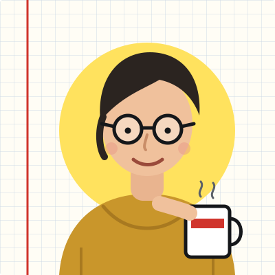

about
Hi, I’m Imke.
I build and run the boring parts of software: databases, queues, build pipelines and the services that sit between them. For the last six years I have done that at Havenlogic, a small company in Paducah that schedules barges along the Ohio River.
This notebook started in 2024 as a place to put the notes I kept rewriting for colleagues. It is still that: long posts when I finally understand something, short ones when I fixed a bug worth remembering, and series when one post isn’t enough.
Everything here is written by me, tested on my own machine and wrong in places. Corrections are always welcome.

Now
Updated 2026-10-04 · What is a now page?
- working on
- Moving our job queue from Redis to Postgres, one worker at a time, and writing down everything that surprises me.
- writing
- Part 3 of Postgres from the inside, about vacuum. Then a short series on query plans.
- reading
- Database Internals again, slowly, with the Postgres source open next to it.
- away from the keyboard
- Learning to repair the bike I commute on, and losing at chess to my niece.
Uses
The setup behind the posts, for the people who ask.
- EditorNeovim with a short config, and VS Code when I pair with someone.
- TerminalA plain terminal, tmux and a shell prompt that shows the git branch and nothing else.
- DatabasesPostgres 17 in a container per project, and
psqlwith\x autoturned on. - HardwareA five-year-old laptop, a mechanical keyboard with quiet switches and a graph-paper notebook.
- This siteTailwind CSS, three typefaces and very little JavaScript. No tracking.
Say hello
Email is best. I answer within a week, faster if your question comes with a reproduction.